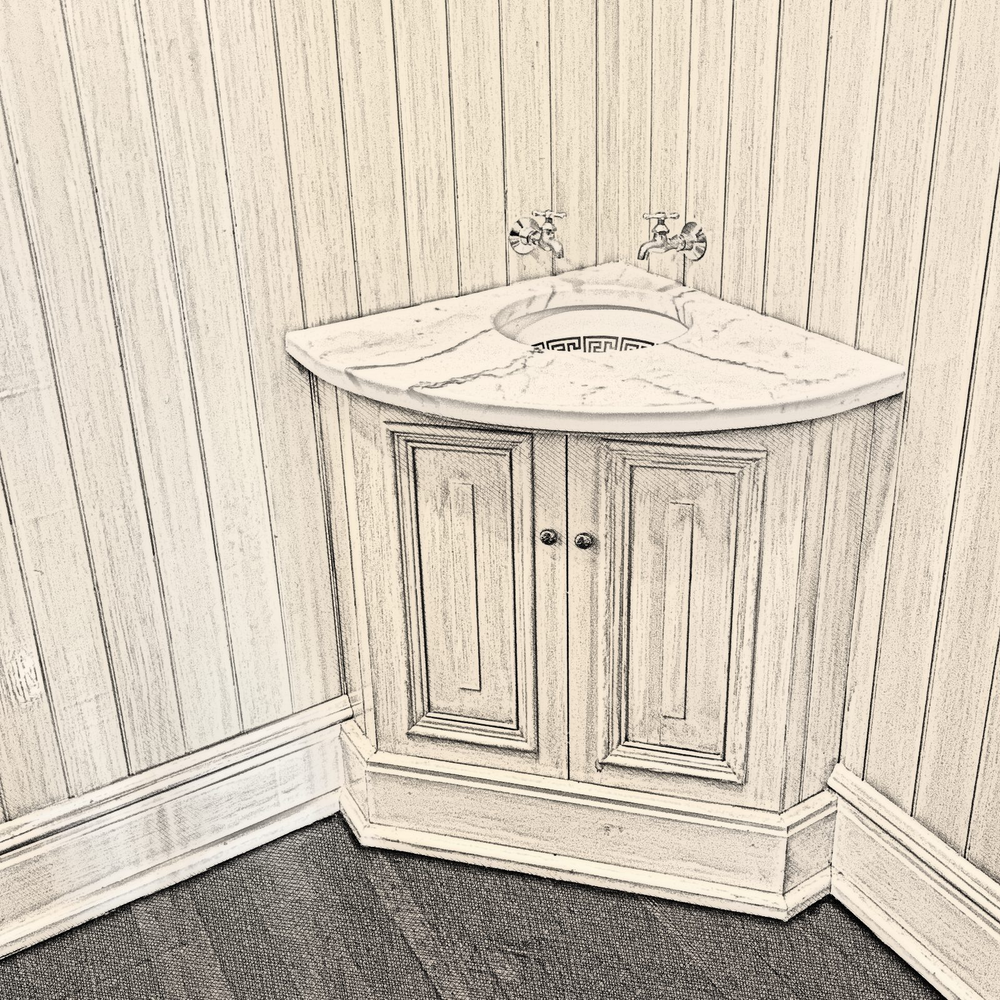
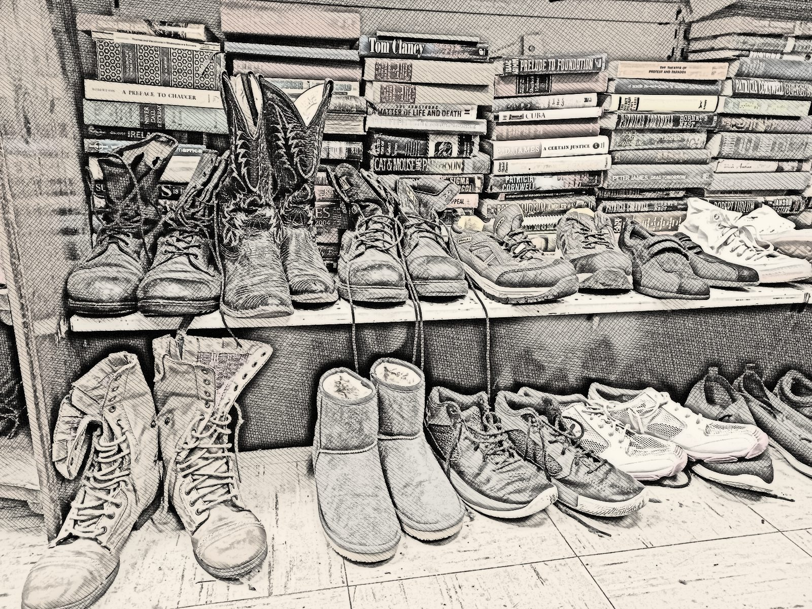
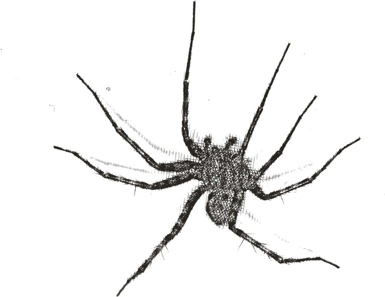
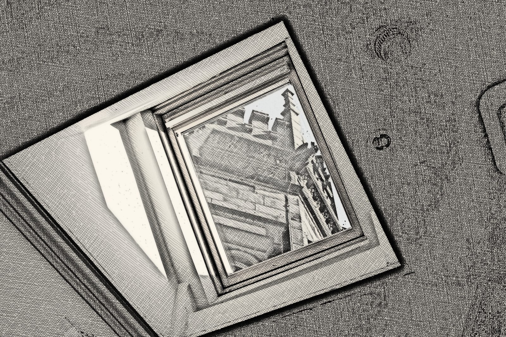
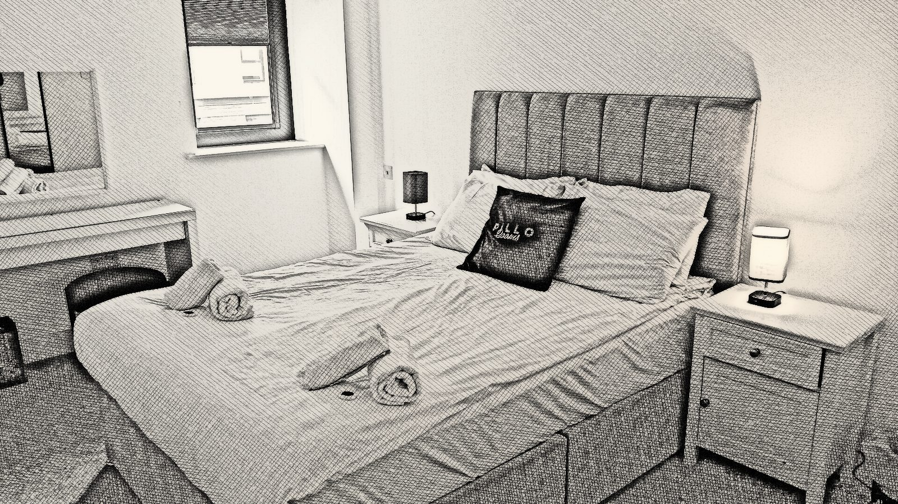
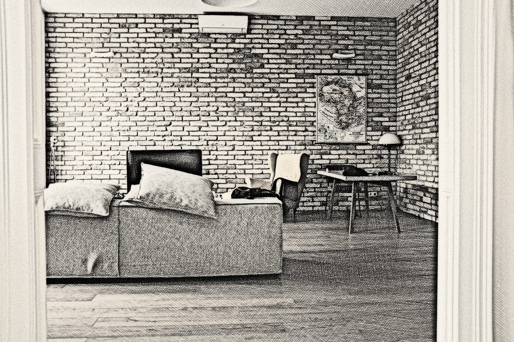
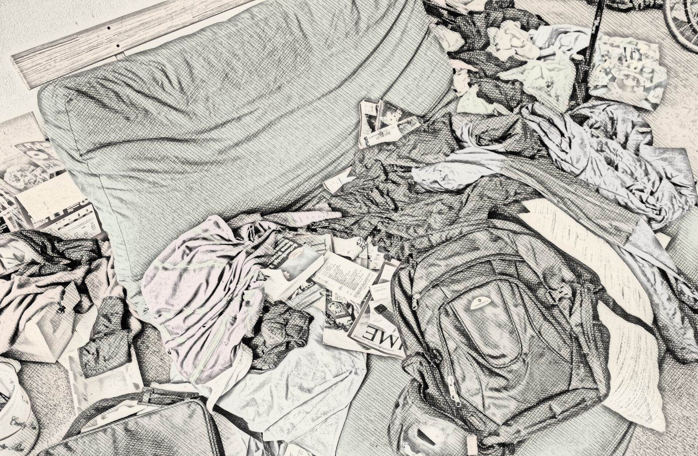

Before moving to Maine, I lived on an island between New Hampshire and Maine…
…with my high school friend Sydney. (For the purposes of this story, we'll call her Cinder Block.)

the corner of the bathroom


by our shoes

…and the skylight
spiders spotted: 1
As spring turned into summer, Cinder and I started to notice something peculiar.
Spiders. Everywhere.
The corner of the bathroom. By our shoes.
Making homes in the skylight.

One night, I had laid down in my bed…
…and saw a spider crawl up the wall next to me.
That was the final straw.
I ripped off my blankets and stormed into our kitchen/living room…

…where Cinder was watching some show about vampires from the early 2010s.
“Jen?”
Cinder turned around.
“That's enough.”
…I declared, in my sweatshirt, shorts, and slightly dirty shorts.
She turned her head.
“Let's get ’em.”
I rallied her.
Dorota ♥(nameless)
And with that, we armed ourselves.
Me, with our broom named Dorota…
…and her with the duster, who remained nameless.
exit →
♪♫♬
We turned on some eclectic dance music…
…and displaced the spiders from their home.
I yelled up to one on the ceiling:
“You are so done.”
When I finally climbed into my bed, I had an eerie feeling.
I knew they would come back with a vengeance…
…that the spiders were encouraged by our anger…
…that our dubstep music had fueled their fire.

z z zz zthe aftermath
The next morning, Cinder and I met in the living room, looking around at the mess in our apartment.
“The spiders,” we conferred, “were clubbing all night long.”
Your turn. Keep scrolling ↓
The after-party · now through Jenny's eyes
Step 1: Choose your appliance.
They came back, and they brought friends. Walk through the apartment and swat as many spiders as you can in 60 seconds. They hide on the floors, the walls and the ceiling. Turn your sound up.
WASDor arrow keys: move and strafe
Shifthold to run
Spacejump
Mouselook around
Clickswing
Escpause
Looking around is much easier with an external mouse than with a trackpad.
The 3D engine didn't load, so the game can't start. Check your internet connection and reload the page.
score0
combo×1
time60
loose0
Find the spiders. Put the circle on one and click to swing.